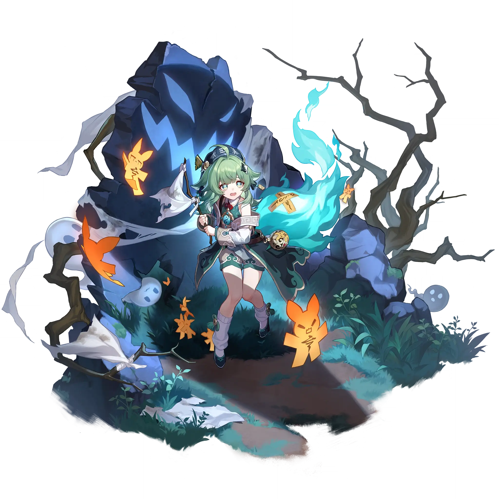

Huohuo
Best Huohuo build guide for Honkai Star Rail. See Huohuo's best Relics, Light Cones, teams, Eidolons, Trace priority, and how to play Huohuo.
🔍 Detail Skill
Semua skill aktif dan pasif beserta efeknya.
Deals Wind DMG equal to #1[i]% of Huohuo's Max HP to a target enemy.
Dispels 1 debuff(s) from a single target ally and immediately restores this ally's HP by an amount equal to #1[i]% of Huohuo's Max HP plus #2[i]. At the same time, restores HP for allies that are adjacent to this target ally by an amount equal to #3[i]% of Huohuo's Max HP plus #4[i].
After using her Skill or Ultimate, Huohuo gains "Divine Provision," lasting for 3 turn(s). This duration decreases by 1 turn at the start of Huohuo's every turn. When Huohuo has "Divine Provision" at the start of an ally target's turn or when they use their Ultimate, restores HP for that ally and the ally with the lowest HP percentage by an amount equal to #1[i]% of Huohuo's Max HP plus #2[i]. The
Huohuo terrorizes surrounding enemies, afflicting Horror-Struck on them. Enemies in Horror-Struck will flee away from Huohuo for 10 second(s). When entering battle with enemies in Horror-Struck, there is a 100% base chance of reducing every single enemy's ATK by 25% for 2 turn(s).
⚔ Light Cone Terbaik
Diurutkan dari yang paling kuat. Persentase menunjukkan performa relatif terhadap pilihan terbaik.
💎 Relic Set Terbaik
Set terbaik untuk karakter ini, diurutkan berdasarkan prioritas.
📊 Stat Utama
Stat yang dicari pada tiap slot.
👥 Tim yang Direkomendasikan
Karakter yang sering dipasangkan bersama Huohuo.
 Aglaea
Aglaea
 Saber
Saber
 Yunli
Yunli
 Argenti
Argenti
 Silver Wolf • Lv. 999
Silver Wolf • Lv. 999
 Sparxie
Sparxie
🔗 Lanjutkan
Build ini dirangkum dari Prydwen Institute. Starwise tidak menghitung sendiri. Angka bisa berubah setelah patch atau karakter baru rilis.